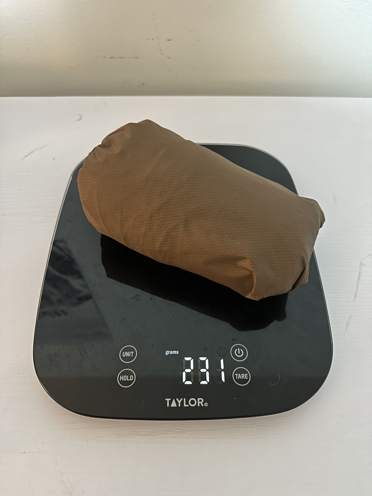
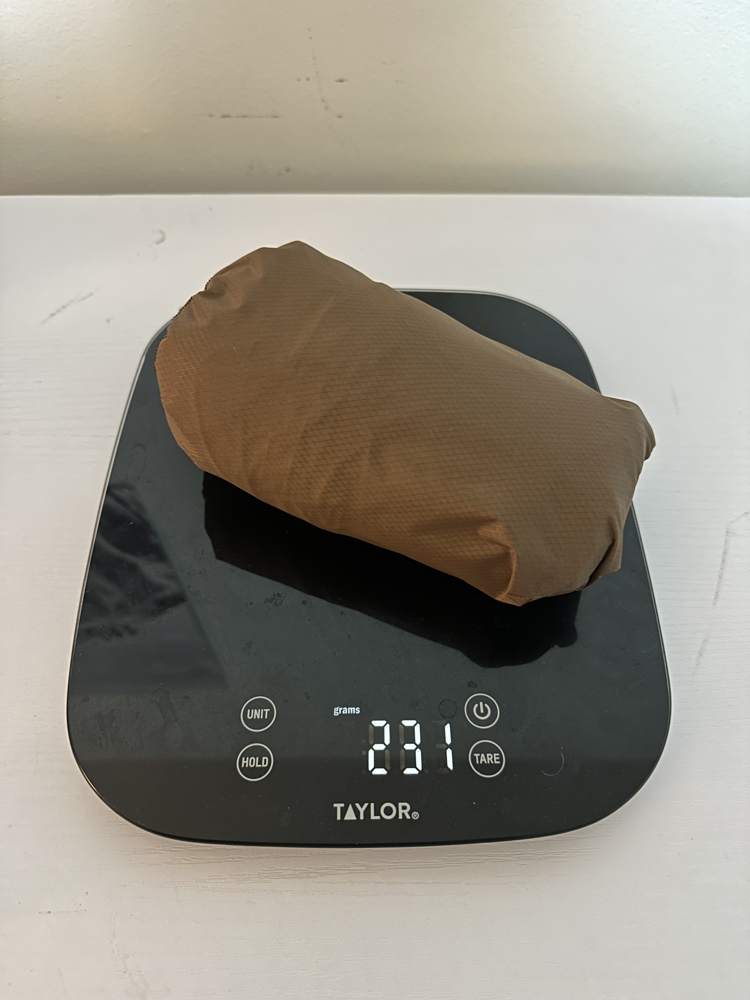

My sewing journey began in 2019 when my truck camper needed curtains. I borrowed my Mom's sewing machine, grabbed some Goodwill fabric, and figured it out. They turned out fine at best, but they held up for seven years and sparked a lasting love for sewing.
The next big project was a randonneuring bag for a bike I was building to race that year. It was the first time I designed a bag from scratch — made a template, cut the fabric, and produced something that matched what I'd envisioned. I slapped some branding on it and settled on "Frog Bags." It wasn't until years later that I drew up my favorite California herp, the Arroyo Toad, and started making tags for the bags I was sewing for friends and family.
Sewing has been an amazing skill to practice and unwind with, and it lets me create useful things for the people I care about. These days I primarily make bikepacking bags and backpacking gear out of my house, mostly for myself and loved ones. At some point I may try producing bags at scale, but for now it's nice to keep it fun. Sewing is a skill I think everyone should develop, as the ability to repair or create things for yourself is incredibly gratifying.
Below are some selected projects, most with a few photos and some with links to related articles.


Rhys' Bike

Abby's Bags


Various Bikepacking Bags


UL Bivy
 

Weston's Bags


Fly Fishing Pouch